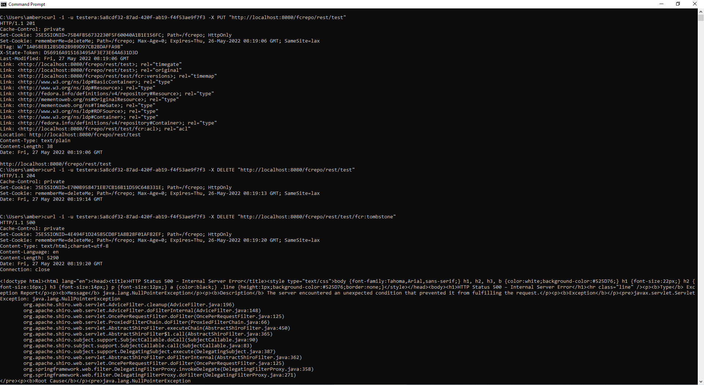
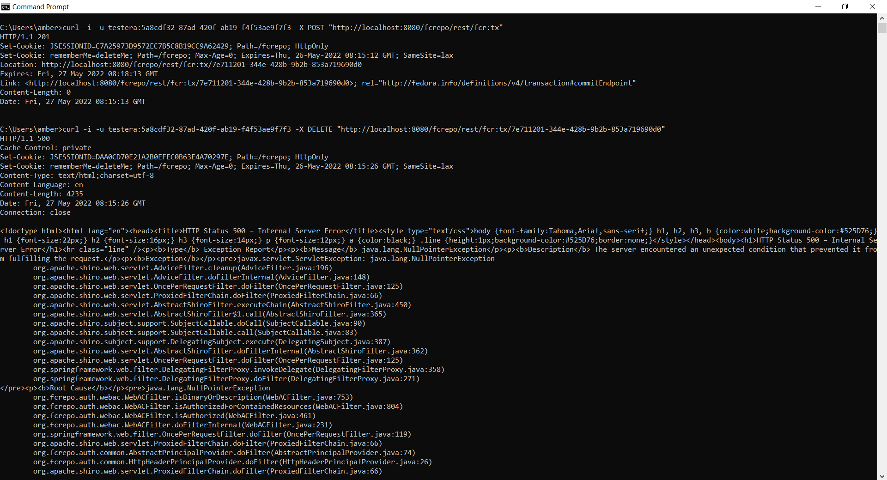

Hi Danny,
One more thing:
I have also encountered error 500 while trying to remove tombstone using fedoraUser role
Steps to reproduce:
- create container
curl -i -u tester:password -X PUT "http://localhost:8080/fcrepo/rest/test" - delete container
curl -i -u tester:password -X DELETE "http://localhost:8080/fcrepo/rest/test" - delete tombstone
curl -i -u tester:password -X DELETE "http://localhost:8080/fcrepo/rest/test/fcr:tombstone
Appreciate if you could help with this issue too.

<!doctype html><html lang="en"><head><title>HTTP Status 500 – Internal Server Error</title><style type="text/css">body {font-family:Tahoma,Arial,sans-serif;} h1, h2, h3, b {color:white;background-color:#525D76;} h1 {font-size:22px;} h2 {font-size:16px;} h3 {font-size:14px;} p {font-size:12px;} a {color:black;} .line {height:1px;background-color:#525D76;border:none;}</style></head><body><h1>HTTP Status 500 – Internal Server Error</h1><hr class="line" /><p><b>Type</b> Exception Report</p><p><b>Message</b> java.lang.NullPointerException</p><p><b>Description</b> The server encountered an unexpected condition that prevented it from fulfilling the request.</p><p><b>Exception</b></p><pre>javax.servlet.ServletException: java.lang.NullPointerException
org.apache.shiro.web.servlet.AdviceFilter.cleanup(AdviceFilter.java:196)
org.apache.shiro.web.servlet.AdviceFilter.doFilterInternal(AdviceFilter.java:148)
org.apache.shiro.web.servlet.OncePerRequestFilter.doFilter(OncePerRequestFilter.java:125)
org.apache.shiro.web.servlet.ProxiedFilterChain.doFilter(ProxiedFilterChain.java:66)
org.apache.shiro.web.servlet.AbstractShiroFilter.executeChain(AbstractShiroFilter.java:450)
org.apache.shiro.web.servlet.AbstractShiroFilter$1.call(AbstractShiroFilter.java:365)
org.apache.shiro.subject.support.SubjectCallable.doCall(SubjectCallable.java:90)
org.apache.shiro.subject.support.SubjectCallable.call(SubjectCallable.java:83)
org.apache.shiro.subject.support.DelegatingSubject.execute(DelegatingSubject.java:387)
org.apache.shiro.web.servlet.AbstractShiroFilter.doFilterInternal(AbstractShiroFilter.java:362)
org.apache.shiro.web.servlet.OncePerRequestFilter.doFilter(OncePerRequestFilter.java:125)
org.springframework.web.filter.DelegatingFilterProxy.invokeDelegate(DelegatingFilterProxy.java:358)
org.springframework.web.filter.DelegatingFilterProxy.doFilter(DelegatingFilterProxy.java:271)
</pre><p><b>Root Cause</b></p><pre>java.lang.NullPointerException
java.base/java.net.URI$Parser.parse(URI.java:3104)
java.base/java.net.URI.<init>(URI.java:600)
java.base/java.net.URI.create(URI.java:881)
java.base/java.util.stream.ReferencePipeline$3$1.accept(ReferencePipeline.java:195)
java.base/java.util.stream.Streams$StreamBuilderImpl.tryAdvance(Streams.java:397)
java.base/java.util.stream.ReferencePipeline.forEachWithCancel(ReferencePipeline.java:127)
java.base/java.util.stream.AbstractPipeline.copyIntoWithCancel(AbstractPipeline.java:502)
java.base/java.util.stream.AbstractPipeline.copyInto(AbstractPipeline.java:488)
java.base/java.util.stream.AbstractPipeline.wrapAndCopyInto(AbstractPipeline.java:474)
java.base/java.util.stream.MatchOps$MatchOp.evaluateSequential(MatchOps.java:230)
java.base/java.util.stream.MatchOps$MatchOp.evaluateSequential(MatchOps.java:196)
java.base/java.util.stream.AbstractPipeline.evaluate(AbstractPipeline.java:234)
java.base/java.util.stream.ReferencePipeline.anyMatch(ReferencePipeline.java:528)
org.fcrepo.auth.webac.WebACFilter.isResourceIndirectOrDirect(WebACFilter.java:572)
org.fcrepo.auth.webac.WebACFilter.isAuthorizedForMembershipResource(WebACFilter.java:619)
org.fcrepo.auth.webac.WebACFilter.isAuthorized(WebACFilter.java:457)
org.fcrepo.auth.webac.WebACFilter.doFilterInternal(WebACFilter.java:231)
org.springframework.web.filter.OncePerRequestFilter.doFilter(OncePerRequestFilter.java:119)
org.apache.shiro.web.servlet.ProxiedFilterChain.doFilter(ProxiedFilterChain.java:66)
org.fcrepo.auth.common.AbstractPrincipalProvider.doFilter(AbstractPrincipalProvider.java:74)
org.fcrepo.auth.common.HttpHeaderPrincipalProvider.doFilter(HttpHeaderPrincipalProvider.java:26)
org.apache.shiro.web.servlet.ProxiedFilterChain.doFilter(ProxiedFilterChain.java:66)
org.fcrepo.auth.common.ServletContainerAuthFilter.doFilter(ServletContainerAuthFilter.java:77)
org.apache.shiro.web.servlet.ProxiedFilterChain.doFilter(ProxiedFilterChain.java:66)
org.apache.shiro.web.servlet.AdviceFilter.executeChain(AdviceFilter.java:108)
org.apache.shiro.web.servlet.AdviceFilter.doFilterInternal(AdviceFilter.java:137)
org.apache.shiro.web.servlet.OncePerRequestFilter.doFilter(OncePerRequestFilter.java:125)
org.apache.shiro.web.servlet.ProxiedFilterChain.doFilter(ProxiedFilterChain.java:66)
org.apache.shiro.web.servlet.AbstractShiroFilter.executeChain(AbstractShiroFilter.java:450)
org.apache.shiro.web.servlet.AbstractShiroFilter$1.call(AbstractShiroFilter.java:365)
org.apache.shiro.subject.support.SubjectCallable.doCall(SubjectCallable.java:90)
org.apache.shiro.subject.support.SubjectCallable.call(SubjectCallable.java:83)
org.apache.shiro.subject.support.DelegatingSubject.execute(DelegatingSubject.java:387)
org.apache.shiro.web.servlet.AbstractShiroFilter.doFilterInternal(AbstractShiroFilter.java:362)
org.apache.shiro.web.servlet.OncePerRequestFilter.doFilter(OncePerRequestFilter.java:125)
org.springframework.web.filter.DelegatingFilterProxy.invokeDelegate(DelegatingFilterProxy.java:358)
org.springframework.web.filter.DelegatingFilterProxy.doFilter(DelegatingFilterProxy.java:271)
</pre><p><b>Note</b> The full stack trace of the root cause is available in the server logs.</p><hr class="line" /><h3>Apache Tomcat/9.0.54</h3></body></html>
Hi Danny,
I'm using Fedora version 6.1.0, runs in docker, using postgres database
user: testera
role: fedoraUser
Steps to reproduce:
curl -i -u testera:password -X POST "http://localhost:8080/fcrepo/rest/fcr:tx"
curl -i -u testera:password -X DELETE "http://localhost:8080/fcrepo/rest/fcr:tx/7197e553-6466-4ed8-b248-2ef88ce854c7"

Attached tomcat server.xml for your reference
server.xml